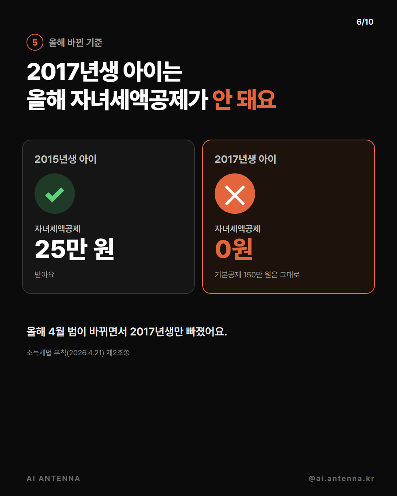

업스테이지가 공개한 세금 계산기(korean-tax-calc-mcp, MIT)를 클로드 앱에 붙이면, 연봉과 가족만 말해도 올해(2026년 귀속) 기준으로 세금을 계산하고 근거 조문을 붙여 줘요. 공제마다 계산은 내 PC의 코드가, 마지막 합산은 클로드가 해요. 합계는 한 번 직접 확인하세요. 저희가 가상 인물(총급여 4,800만 원)로 직접 계산해 본 순서와 요청 문장을 그대로 정리했어요. 결과는 참고용이고, 최종 금액은 홈택스와 회사 담당자에게 확인하세요.
홈택스 '연말정산 미리보기'는 1~9월 카드 사용액과 작년 연말정산 금액으로 예상 세금을 보여 줘요. 10~12월 쓸 금액도 넣어 볼 수 있어요. 카드 공제는 1년 사용액이 총급여의 25%를 넘긴 부분부터예요(총급여 4,800만 원이면 1,200만 원). 넘긴 부분은 체크카드·현금영수증 30%, 신용카드 15%로 공제돼요(조세특례제한법 제126조의2). 이 세금 계산기에는 카드 공제 계산 도구가 없어서, 카드 쪽은 미리보기 숫자를 보세요.
uv를 설치한 뒤, 클로드 데스크톱 앱 메뉴에서 설정(Settings) → Developer → Edit Config를 누르면 설정 파일(claude_desktop_config.json, 윈도우는 %APPDATA%\Claude 폴더)이 열려요. 아래 '설정 파일에 붙일 내용'을 붙여 넣고 저장한 뒤, 앱을 트레이까지 완전히 껐다가 다시 켜세요. 입력창 왼쪽 아래 + → Connectors에 korean-tax-calc가 보이면 연결된 거예요. 클로드 코드를 쓰면 터미널에 claude mcp add korean-tax-calc -- uvx korean-tax-calc-mcp 한 줄이면 돼요.
'세금 계산' 문장에 내 총급여를 넣어 보내세요. 근로소득공제 → 과세표준 → 산출세액 → 근로소득세액공제 순서로 계산하고 근거 조문을 붙여 줘요. 이 단계는 본인 기본공제와 표준세액공제(13만 원)만 넣은 값이라 실제보다 많이 나와요.
'가족 공제' 문장에 공제받을 가족의 출생연도와 소득을 넣으세요. 인적공제(1명당 150만 원, 70세 이상 경로우대 100만 원 추가)와 자녀세액공제를 넣어 다시 계산해요. 부부가 같은 아이를 둘 다 공제받을 수는 없으니 한 사람 쪽에만 넣으세요.
올해(2026년 귀속) 자녀세액공제 나이 기준이 4월에 바뀌었어요. 2017년생 아이는 예외로 빠져 자녀세액공제가 0원이에요. 기본공제 150만 원은 그대로 받아요. 계산기도 이 기준대로 계산해요(소득세법 제59조의2, 부칙(2026.4.21) 제2조③ — 저희가 법령 원문을 직접 확인).

'병원비·보험료' 문장에 금액과 누구 것인지 넣으세요. 병원비는 총급여 3%를 넘긴 부분만 15% 공제돼요(65세 이상 부모님은 한도 없음). 보장성 보험료는 100만 원까지 12%예요. 실손보험으로 돌려받은 병원비는 빼야 해요.
'엑셀' 문장을 보내면 계산마다 시트가 나뉜 엑셀 파일을 만들어요(요약·계산·입력·판단 근거). 금액 칸은 수식이고, 도구 값과 맞는지 확인 칸이 붙어요. 요약 시트 맨 아래에 '세무 자문 아님'이 적혀 있어요. 마지막 합산(자녀·의료비 공제를 뺀 최종 세금)은 파일에 안 들어가고 대화 답에 표로 따로 와요.
② 연결
{
"mcpServers": {
"korean-tax-calc": {
"command": "uvx",
"args": ["korean-tax-calc-mcp"]
}
}
}③
2026년 귀속 연말정산 미리 계산해 줘. 총급여 [4,800만 원]이고 다른 공제는 아직 없어. 세금 얼마 나와?
④
[어머니, 1954년생, 소득 없음]을 모시고 살고, 아이가 [둘, 2015년생과 2017년생]이야. 배우자는 따로 일해서 내가 [아이 둘이랑 어머니] 공제를 받을 거야. 그러면 세금이 얼마나 줄어?
⑥
올해 [어머니] 병원비로 [300만 원] 냈고, 내 보장성 보험료로 [100만 원] 냈어. 이걸 공제받는 게 나아, 아니면 그냥 13만 원(표준세액공제) 받는 게 나아?
⑦
지금까지 계산한 걸 근거까지 엑셀 파일로 뽑아 줘. 회사 담당자한테 보여 줄 수 있게.
마지막에
급여명세서 기준 올해 국민연금 [○○원], 건강보험 [○○원], 고용보험 [○○원]을 냈고, 이미 떼어 간 소득세(기납부세액)는 [○○원]이야. 이걸 넣어서 환급인지 추가 납부인지 다시 계산해 줘.
같은 계산기 공식 도구 목록에 있는 세금이에요. 이번 편에서 저희가 직접 계산해 본 건 연말정산뿐이라, 아래는 요청 문장 예시만 적어요. [ ] 안을 내 것으로 바꿔 쓰세요.
퇴직금 1억, 근속 15년 퇴직소득세 (README 예시 그대로)
도구: retirement_income_tax
[2026]년에 [취득가액 ○억]에 산 집을 [양도가액 ○억]에 팔면 양도소득세 얼마야?
도구: capital_gains_income · capital_gains_tax
[부모님]에게 [○억]을 증여받으면 증여세 얼마야?
도구: inheritance_tax · gift_tax
[2026]년 귀속 종합소득 과세표준 [○천만 원]이면 종합소득세 얼마야?
도구: income_tax
[2026]년에 주택 [1채]로 월세 [○○만 원]을 받았어. 주택임대소득 세금 어떻게 돼?
도구: housing_rental_income
과소신고 1천만 원을 10월 7일에 납부하면 가산세는? (README 예시 그대로)
도구: underreporting_penalty · late_payment_penalty
도움이 되셨다면
@ai.antenna.kr
에서 바로 쓰는 AI 활용법을 계속 올립니다.